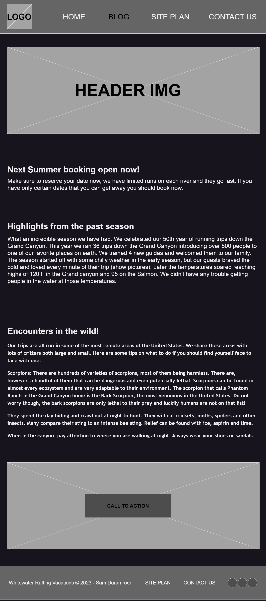
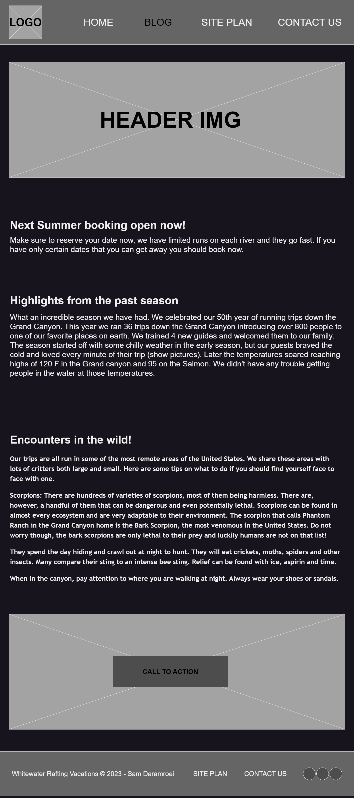
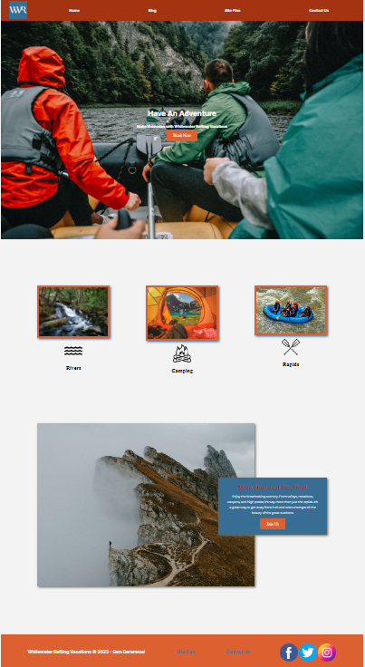
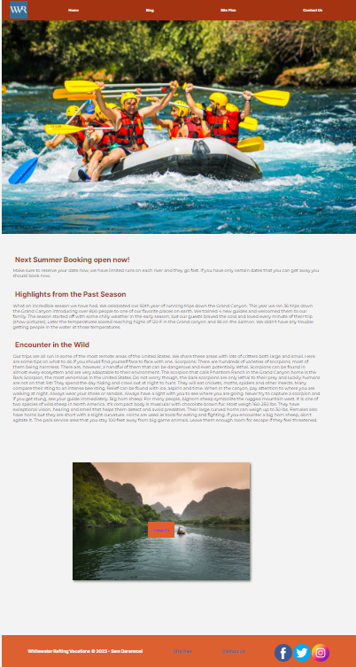
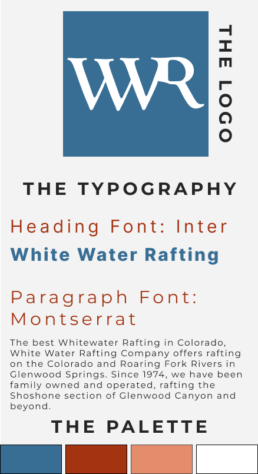

Overview
Purpose
"Empowering businesses through exceptional web and graphic design.
At Cheerios Studio, our purpose is to provide businesses with top-notch web and graphic design solutions.
As a team of talented student UI/UX designers and programmers, we offer services such as
UI/UX design, graphic design, web design, content writing, and brand designing.
We focus on creating visually stunning and user-friendly experiences that captivate audiences
and drive tangible results. Through collaboration, open communication, and a deep
understanding of our clients' vision, we strive to exceed expectations and empower
businesses to thrive in the digital landscape."
Audience
Our audience consists of businesses and organizations seeking professional and innovative design solutions to elevate their online presence, enhance user experiences, and drive business growth. Regardless of their size or industry, we are committed to delivering exceptional results that meet their unique objectives and exceed their expectations.
Branding
Website Logo

Style Guide
Color Palette
Palette URL: https://coolors.co/003049-313131-f77f00-fcbf49| Primary | Secondary | Accent1 | Accent2 |
|---|---|---|---|
| #003049 | #313131 | #f77f00 | #fcbf49 |
Typography
Heading Font: Inter
Paragraph Font: Montserrat
Normal paragraph example
At Cheerios Studio, our purpose is to provide businesses with top-notch web and graphic design solutions. As a team of talented student UI/UX designers and programmers, we offer services such as UI/UX design, graphic design, web design, content writing, and brand designing.
Colored paragraph example
We focus on creating visually stunning and user-friendly experiences that captivate audiences and drive tangible results. Through collaboration, open communication, and a deep understanding of our clients' vision, we strive to exceed expectations and empower businesses to thrive in the digital landscape.
Navigation
Site Map
Content
Home page
Who are we?
At Cheerios Studio, we offer custom web design and development
solutions that prioritize communication, collaboration, and client
satisfaction. We deliver high-quality projects within the agreed
timeframe and budget, ensuring that clients' needs are met every
step of the way.
Our team consists of high-skilled designers, developers and content managers that pay
attention to details and your requirements, delivering the best customized web and design
solutions.
Check Our Work!
Ready to elevate your brand? We specialize in web and graphic design that captivates and
leaves a lasting impression. Let's create a stunning online presence that reflects your
unique identity. From sleek websites to eye-catching logos, we deliver excellence.
Don't settle, contact us today to craft a remarkable digital experience.
Your success starts here!
Images for the Home page


WHAT
What are the services we provide?
At Cheerios Studio, we are your one-stop solution for all your digital design needs.
Our services include:
Web Design: We craft visually stunning and user-friendly websites that engage your audience and
drive results. From responsive layouts to seamless navigation, we ensure a memorable online
experience for your visitors.
UI/UX Design: We prioritize user-centric design, creating interfaces that are not only
aesthetically pleasing but also intuitive and easy to navigate.
Our goal is to enhance user satisfaction and maximize the impact of your digital products.
Social Media Content Management: Harness the power of social media with our expert content
management services. We develop captivating visuals and engaging copy that resonate with your
target audience, building a strong online presence and driving
meaningful engagement.
Branding Design: Your brand deserves to stand out in a crowded marketplace.
We specialize in crafting compelling brand identities that accurately represent your values and
leave a lasting impression. From logo design to brand guidelines, we ensure
consistency across all touchpoints.
At Cheerios Studio, we are passionate about delivering exceptional designs that elevate your
brand and help you achieve your goals. Let us be your creative partner, bringing your vision to
life and making a lasting impact in the digital landscape.
Contact us today to discuss how we can collaborate and take your brand to new heights.
Images for the Page 2


WORK
White Water Rafting - Wireframing
White Water Rafting provides resources and insights to help you make informed
decisions and engage in safe and enjoyable white water rafting experiences.
Discover the world of white water rafting and unlock its potential for teamwork,
leadership, and learning. Therefore our design needed to be simple but yet
captivating so the users don’t get bored or distracted while reading the content.
White Water Rafting - Homepage
The homepage design and structure of the homepage present a visually
engaging layout, combining appealing images with concise and clear sections to
promote the company's whitewater rafting vacations. The navigation menu,
hero section, main content, and footer work together to provide users with
information, an opportunity to take action, and access to additional pages and
social media channels.
White Water Rafting - Blogpage
The design and structure of the Blog page maintain consistency with the
overall website. It provides users with informative blog content about the
company's offerings and experiences, along with an opportunity to contact the
company if needed.
White Water Rafting - Design System
Color Palette:
The chosen color palette consists of four colors: primary, secondary, accent 1, and accent 2.
The primary color (#396E94) is a deep blue tone that evokes a sense of depth and stability,
which can be suitable for a water-related adventure theme.
The secondary color (#A43312) is a warm reddish-brown shade that adds
contrast and energy to the palette.
The accent 1 color (#DD6031) is a vibrant orange hue that can
create a focal point and draw attention to specific elements.
The accent 2 color (#FFFFFF) is white, which provides a clean and neutral
background for the content.
Overall, the chosen color palette offers a harmonious combination of colors
that can evoke a sense of adventure and energy,
while also maintaining visual balance and readability.
Typography:
The chosen heading font, "Inter," is a versatile and modern sans-serif typeface.
It is known for its legibility and suitability for various design contexts.
The paragraph font, "Montserrat," is another popular sans-serif typeface that
offers a clean and elegant appearance. It is widely used for both headings and body text.
The selected typography was a good choice, as both "Inter" and "Montserrat"
are widely recognized and commonly used fonts that offer readability and a
contemporary aesthetic.
Overall, the chosen color palette and typography is well-suited for a
whitewater rafting and adventure-themed website.
The colors convey a sense of excitement and nature,
while the typography ensures clear and legible text throughout the website.
Images for the WWR - Wireframing
 

Images for the WWR - Homepage
Images for the WWR - Blogpage
Images for the WWR - Design System
Wireframes
Home

WHAT